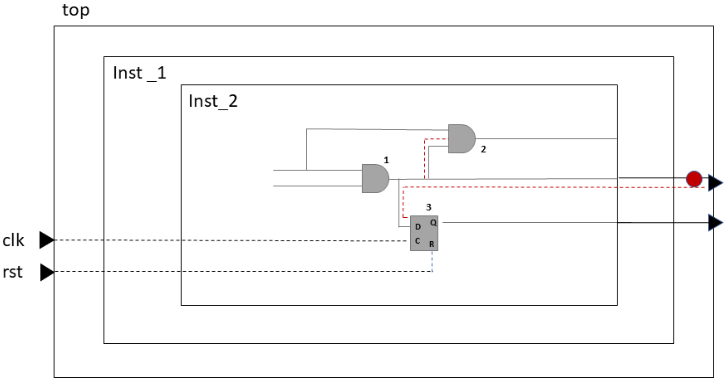
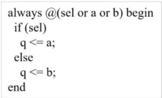
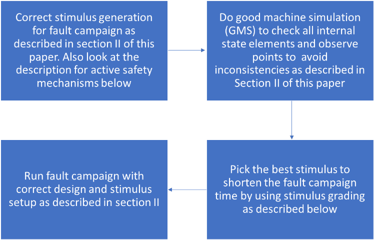

我的 fault campaign 能否为 ISO 26262 认证提供准确结果？
论文针对大型复杂汽车安全设计上 fault campaign 结果准确性难以保证的问题，指出设计规模增大、高质量激励难以提供、需分析的故障数量庞大，使依赖单一技术的穷举式安全验证不再现实。方法上以 Samsung 的安全流程为真实案例，提出在昂贵的故障注入之前先用结构化分析 RTL 的安全分析工具获取 FIT、DC 等安全指标以优化安全架构，并通过规范 design setup、force 全层级传播、避免 RTL # delay、lint-clean RTL、XPROP=resolve 和 race 处理来生成高质量激励，再用 good-machine simulation 检查所有 state element 与 observe point 的偏差。同时采用 safety-mechanism-aware COI 裁剪、fault collapsing 和统计随机采样优化故障列表。关键结果显示：XPROP=NOXPROP 下 15% 的 state element 出现偏差，改用 XPROP=RESOLVE 后降至 4.63%；4598 个采样故障中 65.87% 被 safety mechanism 检出。结论是遵循该流程可确保 fault campaign 结果对 ISO 26262 认证准确可信。
如何保证面向 ISO 26262 认证的 fault campaign 结果准确：激励质量差（race、force、# delay、RTL 与综合行为不一致、X 值处理不当）、safety mechanism 未激活、故障列表未优化以及 good-machine simulation 偏差未清理，都会导致错误的安全指标结论，论文要给出可落地的规划与验证方法。
以 Samsung 安全流程为实例的端到端 fault campaign 方法论：(1) 故障注入前用结构化分析 RTL 的安全分析工具获得 FIT/DC 指标，先优化安全架构；(2) 高质量激励生成规范：正确的 design setup、testbench force 跨层级完整传播、避免 RTL # delay、lint-clean RTL、XPROP=resolve 处理 X 传播、处理 reset/clock 与 data/clock race（如 QuestaSim 的 -deraceclockdata）；(3) good-machine simulation：KaleidoScope 并发故障模拟器不仅检查 observe points，还检查所有 state elements 的偏差，避免 dormant deviation；(4) 故障列表优化：safety-mechanism-aware 优化（剔除不在 safety mechanism COI 内的故障）、fault collapsing、统计随机采样；(5) 激活所有 safety mechanism 并内置 self-checking、stimulus grading、并发并行故障注入以利用全部算力。
Good-machine simulation 中，XPROP=NOXPROP 生成的初始激励导致 15% 的 state element 出现偏差；改用 XPROP=RESOLVE 后偏差降至 4.63%，剩余偏差经分类分析后清理。
基于统计随机采样对 4598 个故障进行注入：65.87% 被 safety mechanism 检出（Alarm Detected），9.86% 为 Residual（危险故障，主要因目标设计边界 safety mechanism 部分配置、落在 unprotected area），14.98% 为 No Deviation，9.38% 因激励不允许而 Not Injected。
应用本文全部方法（提高激励质量、正确 setup、清理 good-machine simulation 偏差）后给出更新的 fault campaign 结果（Table 6），与先前论文结果（Table 5）对比，但正文未列出具体数值。
相对作者在 DVCon US 2023 的一般性 fault campaign 方法论论文，本文深入到 fault campaign 的规划与结果正确性验证细节：系统化给出激励质量检查清单（force 传播、# delay、sim-vs-synthesis mismatch、XPROP=resolve、race 处理）、good-machine simulation 检查全部 state elements 以避免 dormant deviation、以及 safety-mechanism-aware 故障列表优化，并以 Samsung 认证活动中的真实设计数据量化验证了各步骤的效果。
相关度级别：high
命中能力域：2.5 功能安全与安全机制 | 2.6 Fault simulation/Z01X/TFMEA
理由：论文直接命中团队两个能力域的核心技术：2.5 方面涉及 ISO 26262 安全验证、FIT/DC 指标、safety mechanism 激活与 self-checking 设计；2.6 方面涉及基于功能 stimulus 的 fault injection、fault grading、detectability 分析与安全论证关联。其 good-machine simulation 全 state element 偏差检查、激励质量规范（XPROP=resolve、race 处理、force 传播）和故障列表优化（COI 裁剪、fault collapsing、随机采样）可直接借鉴到团队基于功能 pattern 的 fault grading 与 FuSa TFMEA/FMEDA 论证流程，用于保证 fault campaign 数据可审计、可信。
建议动作：深入精读并做内部分享
安全机制感知优化可消除不属于安全机制影响锥（COI）的故障。故障坍缩可消除逻辑等价的故障，而统计随机抽样则可在给定置信水平的情况下，通过对故障进行随机抽样估计来缩减故障列表的规模。所有这些用于优化故障列表的方法均已纳入考虑。
为确保使用高质量激励并从故障注入活动中获得最佳结果，需要执行若干步骤。要生成合适的激励，必须考虑以下几个条件：正确的设计设置、测试平台（testbench）中的强制赋值（force）、寄存器传输级（RTL）仿真与综合之间的不匹配、Xprop(resolve)，以及竞态处理。
在使用为良机（good machine）检查和故障注入活动生成的激励时，我们需要确保拥有正确的设置。在功能激励生成与良机/故障注入活动仿真之间，设计应当保持一致。
为了获得高质量激励，我们需要确保使用相同的输入配置，包括：
功能仿真中使用的强制（force）完整列表需要传递给故障注入活动引擎。施加在信号网络（net）上的强制应当传播到该网络在所有层次结构中延伸到的任何位置，如下例所示：

在图 1 中，网络上的强制用红色圆圈表示。该强制的作用应当传播到 gate 1 的输出，进而影响 gate 2 和 flip flop 3。强制值的传播不能在 top.inst_1 或 top.inst_1.inst_2 处停止。这种强制行为在寄存器传输级（RTL）与门级网表之间可能有所不同。综合后网表的行为更接近实际硅片，因为综合后的设计具有与硅片类似的扁平化网络。
在进行功能仿真时，避免在 RTL 中放置 # 延迟始终是一种良好的做法，如图 2 所示，因为添加延迟会导致设计的功能在仿真与综合之间出现不匹配。
always @ (posedge clk) q <= #5 din ;
为确保避免任何无意的 # 延迟，激励生成应始终采用非 # 延迟建模。所有业界标准仿真器都为此提供了相应配置。如果原始代码中已经存在大量 # 延迟，则需要额外的处理来保证故障仿真活动结果的有效性。
仿真行为与综合不匹配
仿真模型不匹配是由于仿真模型与实际硬件行为之间的差异造成的。这些差异可能导致意外的结果，其原因可能是 RTL 中的逻辑错误或设计实现不当。这种行为所造成影响的一些示例如下：
为避免这些情况，我们建议在激励生成中使用通过 lint 检查（lint-clean）的 RTL。任何业界标准的 linter 工具都可以用来取得良好的结果。
RTL 仿真使用 X 值来临时表示在给定时刻无法预测或确定的状态。由于设计一旦在硅片中实现后 X 值便不再出现，因此仿真与硅片之间可能出现不匹配。通常，RTL 仿真基于 X-Optimism（X 乐观）进行，但为了更贴近地反映硅片行为，在仿真中调试 X 行为时更倾向于采用 X-Pessimism（X 悲观）。这也是一种最佳实践，可以表明在使用 RTL 进行故障注入测试时，所使用的 RTL 与门级网表（gate level netlist）是相互关联的。请考虑图 3 中的以下代码：

表 1 展示了 X-Optimism 和 X-Pessimism 两者的仿真结果。解析 X（Resolve X）是 X-Pessimism 的行为。
| 0 | 1 | 2 | 3 | 4 |
|---|---|---|---|---|
| sel | a | b | Non X-Prop (q) | Resolve (q) |
| X | 0 | 0 | 0 | Resolve (a,b) = 0 |
| X | 0 | 1 | 1 | Resolve (a,b) = X |
| X | 1 | 0 | 0 | Resolve (a,b) = X |
| X | 1 | 1 | 1 | Resolve (a,b) = 1 |
| 0 | 1 | 2 | 3 | 4 |
在 RTL 仿真中使用 XPROP=resolve，可以尝试通过基于特定算法或解析规则将 X 值强制为确定状态来解析这些 X 值。这有助于对硬件在遇到未知状态时可能的行为进行建模。它还能更好地洞察综合后的硬件在遇到未知状态时的行为，并有助于发现可能由于门级优化或 RTL 与门级表示之间的不匹配而引发的问题，如图 4 所示。
(1) always_comb () If(S) O = in1; Else O = in2; (2) assign O = S ? In1 : in2; 当 S 为 “x” 时，在不使用 xprop=resolve 的情况下，行为 (1) 和 (2) 将不匹配
竞争会导致仿真行为出现偏差。最常见的竞争有。
当测试平台（testbench）同时改变复位和时钟时，就会发生这种竞争条件。这可以通过在时钟有效时改变复位来避免。我们观察到，在复杂的测试平台中这是一件相当困难的事情。我们在 Siemens EDA 的 KaleidoScope 工具中增加了一项功能，用于延迟复位，直到有效时钟边沿被吸收。
当测试平台在时钟的有效边沿驱动数据时，就会发生这种竞争。为避免这种情况，数据应始终在时钟的非有效边沿驱动。如果用户没有明确的方法来处理这一问题，可以在生成激励时利用所用仿真器的特性。例如，Siemens 的数字仿真器 QuestaSim 提供了 -deraceclockdata 仿真开关，它可以缓解时钟与数据之间的竞争，并提供一种读取旧（稳定）数据值的方法。
故障仿真工具在进行无故障机器仿真时，必须检查设计中的所有状态单元是否与输入激励相匹配。这包括检查观察点以及所有状态单元是否存在偏差。
若将检查仅限于观察点，将会损害故障仿真活动结果的正确性，因为状态单元的潜伏偏差可能导致错误行为。
KaleidoScope 故障仿真器不仅检查观察点，还检查所有状态单元是否存在偏差。这种方法论的优点在于它能够避免潜伏偏差。由于 KaleidoScope 会检查所有状态单元和观察点的偏差，因此故障仿真活动的结果始终是准确的。
Kaleidoscope 的好机器仿真方法包括以下内容：
我们提出了一种故障仿真活动方法论，该方法论兼顾了活动的正确性与恰当性。遵循图5所示的该方法论，可保证故障仿真活动首次执行即正确无误。

Doing fault campaigns on stimulus where safety mechanisms are not active is detrimental as it will result in marking
all the faults as undetected. It is very important to activate all safety mechanisms in the design for fault campaigns.
A good approach is to put self-checking in place when implementing the safety mechanism which will copy the behavior of the fault and will trigger an alarm on the safety mechanism [9]. Use these steps:
激励分级（stimulus grading）是一种对所有输入激励进行分析，以挑选出能够执行最多故障注入的那一个激励的技术。这可以简单到只查看翻转覆盖率（toggle coverage），也可能涉及将故障传播到下一状态元件以观察偏差是否传播，这比查看翻转覆盖率更为复杂。
我们已经讨论过，在为故障注入活动生成激励时，务必处理好竞态条件是何等重要。同样，在故障注入流程中也必须确保处理好竞态条件，这一点至关重要，唯有如此，故障注入活动所得的结果才能保持一致。
如前所述，我们强烈建议使用 resolve X 传播（x-propagation）方法来生成激励。
在三星（Samsung）设计中，初始的好机器（good-machine）仿真分析显示出相当多的偏差。在解决了激励生成问题之后，这些偏差便消失了。初始激励是使用 XPROP=NOXPROP 生成的，这导致总状态单元中有 15% 出现偏差。我们使用 XPROP=RESOLVE 生成了激励，并用它进行好机器仿真，偏差百分比降至 4.63%。我们并未止步于此，因为我们希望理解所有这些偏差，看看是否能够修复/处理/理解它们。在下一节中，我们将讨论我们针对这一问题的处理方法。
| 0 | 1 |
|---|---|
| Stimulus Generate Method | Deviation % |
| Original stimulus Generated with XPROP=noXprop | ~ 15% |
| Updated Stimulus Generated using XPROP=resolve | 4.63% |
| 0 | 1 |
我们对剩余的 4.6% 偏差按若干类别进行了分析。下表展示了其中的若干类别：
| Cause.Total Remaining (4.6%) | Number of Deviations specific to the cause.37,546 | |
|---|---|---|
| 1 | Force signal list Missing simulation force list | 600 170 |
| 2 | Race Delay | 27,205 |
| 3 | RTL # Delays | 7,722 |
| 4 | Simulation behavior vs synthesis mismatch | 1,845 |
| 5 | Design should be the same between stimulus generation and good-machine simulation | 4 |
| | Cause.Total Remaining (4.6%) | Number of Deviations specific to the cause.37,546 |
在本实验中，Samsung 设计的故障空间非常庞大。由于故障空间规模巨大，我们利用 KaleidoScope 所支持的统计随机抽样技术生成了一个故障子集。
采用该技术分析的故障总数为 4598 个。在下一节中，我们将逐步介绍该故障列表的结果。
| Categories | % Of faults | |
|---|---|---|
| 1 | Alarm Detected | 65.87 % |
| 2 | Residual | 9.86 % |
| 3 | No Deviation | 14.98 % |
| 4 | Not Injected | 9.38 % |
| | Categories | % Of faults |
我们使用了来自良好机器仿真（good-machine simulation）的完全经过验证的激励，从而保证了结果的正确性。我们总共注入了 100% 的故障，并按表 4 所示的四个类别观察结果。第一类“检测到报警”（Alarm Detected）表示 65.87% 的故障被安全机制检测到。第二类“残余”（Residual）表示 9.86% 的故障未被安全机制检测到，被视为危险故障。但这是一个预期中的结果，因为目标设计边界上的安全机制仅部分配置，大多数残余故障被注入到了未受保护的区域。第三类“无偏差”（No Deviation）表示 14.98% 的故障虽被注入，但在该激励下未在设计上引起任何偏差。第四类“未注入”（Not Injected）表示 9.38% 的故障因输入激励不允许而未被注入。在整个仿真过程中，这些故障节点的黄金值与故障值始终保持一致。
以下是应用本文所讨论的全部方法后得到的最新实验结果。表 5 中的结果来自此前一篇论文[4]中所说明的实验。表 6 展示了应用本文所述全部方法（包括提高激励质量、有效设置以及清理所有好机（good-machine）仿真）之后的更新结果。本实验所使用的总故障空间在 Total Faults% 列中表示为 100%。所有其他测试结果均表示为检测到的故障占该总故障空间的比例。
| BUS Logic | Total Faults% (SA0+SA1) | Test 1: Detected (%) | Test 2: Detected (%) | Test 3: Detected (%) | Test 4: Detected (%) | Test 5: Detected (%) |
|---|---|---|---|---|---|---|
| NOC in Safety Island | 100% | 3.27% | 5.50% | 9.80% | 42.81% | TBD (Future work) |
| BUS Logic | Total Faults% (SA0+SA1) | Test 1: Detected (%) | Test 2: Detected (%) | Test 3: Detected (%) | Test 4: Detected (%) | Test 5: Detected (%) |
| BUS Logic | Total Faults% (SA0+SA1) | Test 1: Detected (%) | Test 2: Detected (%) | Test 3: Detected (%) | Test 4: Detected (%) | Test 5: Detected (%) |
|---|---|---|---|---|---|---|
| NOC in Safety Island | 100% | 3.27% | 5.50% | 9.80% | 42.81% | 65.87% |
| BUS Logic | Total Faults% (SA0+SA1) | Test 1: Detected (%) | Test 2: Detected (%) | Test 3: Detected (%) | Test 4: Detected (%) | Test 5: Detected (%) |
在回答“我的故障实验是否为 ISO 认证提供了准确的结果？”这一问题时，我们描述了为获得高质量的故障实验结果所需要采用的关键概念和流程。我们还论述了处理竞争、强制赋值、延迟、设计设置问题以及仿真与综合差异等问题的关键性。本文所示的分析基于 Samsung 设计，我们借此说明了遵循本文所述的方法将如何帮助确保您的故障实验结果是准确的。